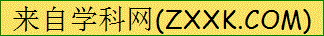

2016年北京市中考英语试题 · 完形填空 第31、32、33、34、35、36、37、38、39、40题
五、完形填空（共15分，每小题1.5分）
阅读下面的短文，掌握其大意，然后从短文后各题所给的A、B、C、D四个选项中，选择最佳答案。
Mum’s Christmas Surprise
Molly ran back home from school and dropped her schoolbag on the sofa. Then on the table she saw “Mum’s Wish Book” – a mail order catalog（商品目录） from a gift shop. “Mum,” she said excitedly to herself, “this year you’ll get the gloves you want!” Molly had walked a dog for a neighbor and saved her 31 all year to buy Mum the gloves.
She opened “Mum’s Wish Book” and hoped that she could find these 32 in it. Teas ran down her face when she saw the gloves in the catalog. Mum wouldn’t buy them for herself, because the family had a 33 time on the farm. She once heard Mum say to Dad, “Maybe some day, I’ll have the money to get them.”
Molly ran out by the back door and went straight to the post office. There she carefully filled out the order form torn from the catalog.
“I need to buy a stamp to 34 the form.” She said to Mr. Smith, the only worker in the post office.
“Umm, a pair of gloves?” said Mr. Smith, as he passed a stamp to her.
“Yes, It’s a Christmas gift for Mum, but please don’t tell her. I

t’s our 35 , OK?” Molly didn’t realize how white Mr. Smith’s beard was until that moment. In face, he reminded her of Santa Claus.As Molly walked back home, she decided to tell Dad her secret. “You’ve got to check the mailbox every day,” said Molly 36 to Dad. He nodded, with a big smile.
Coming home from school every day, Molly peeked at （偷看） Dad hen Mum wasn’t 37 , but every time he shook his head.
On Christmas Eve, Dad came back from mailbox, still empty handed. Molly felt 38 when she went to bed, because she didn’t have the gloves for Mum.
Before Christmas dinner, as Mum took the apple pies out of the oven, Molly began 39 the table. Suddenly, they heard someone pulling up the driveway. From the window they saw Mr. Smith making his way to the door, with a box in his hand. Mr. Smith 40 Mum the box, “I believe this is yours.”
Mum looked from Dad to Molly and opened the box. Her eyes lit up when she saw the gloves. “Oh, who bought these for me?” she asked.
“Santa did,” said Molly smilingly.
“Ho! Ho! Ho! Merry Christmas!” Mr. Smith, with a loud laugh.
It was Christmas that no one would ever forget.
31. A. timeB. moneyC. energyD. food
32. A. flowersB. sunglassesC. glovesD. chocolates
33. A. hardB. lonelyC. shortD. busy
34. A. designB. checkC. completeD. send
35. A. secretB. choiceC. dream D. task
36. A. patientlyB. doubtfullyC. proudlyD. quietly
37. A. workingB. lookingC. smilingD. talking
38. A. sadB. strangeC. angryD. tired
39. A. pushingB. changingC. settingD. booking
40. A. boughtB. handedC. lentD. returned